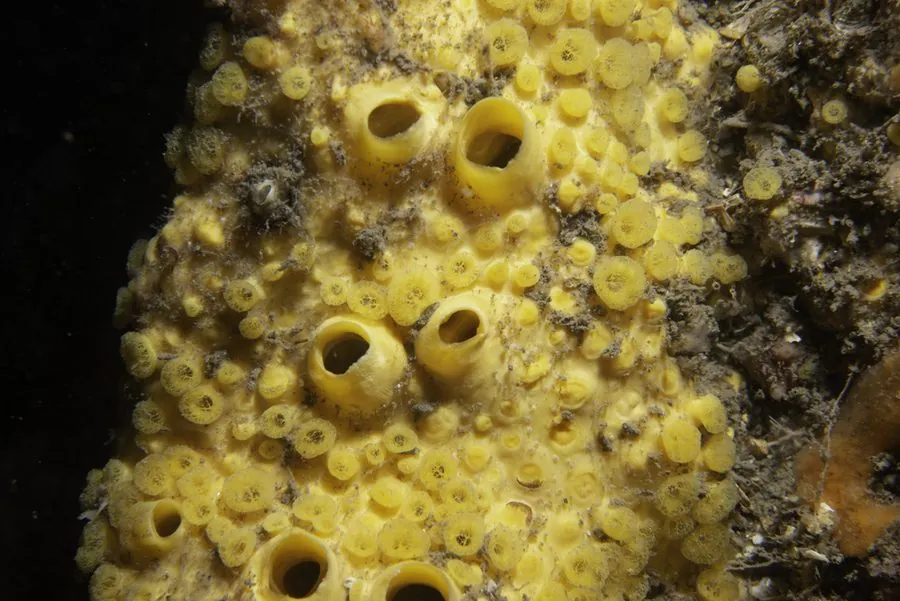

其他无脊椎动物 · 动物界
穿贝海绵 Cliona celata

会钻入牡蛎、贻贝等贝壳内部生活的黄色海绵，靠化学溶解与机械磨蚀开出孔道，是贝类养殖业头疼的敌害生物。
- 分类
- 门海绵动物门纲寻常海绵纲目穿贝海绵目科穿贝海绵科属穿贝海绵属
- 栖息环境
- 潮下带岩礁、牡蛎礁与贝类养殖区，常钻孔于贝壳和石灰岩中
- 地理分布
- 北大西洋、地中海与北美东海岸，中国沿海有相近种类
- 保护级别
- 暂无评估
物种志
穿贝海绵的群体呈黄色、橙黄色或硫黄色，多为块状或葡萄串状，直径5–20厘米，表面有许多小孔，孔口处伸出细小的突起。它没有固定的外形，会随附着基的形状而变化，被贝壳包住时只剩下一个个黄色小点露在外面。
幼体附着到贝壳或石灰岩表面后便开始钻孔：一方面分泌酸性物质溶解碳酸钙，一方面靠细胞机械磨蚀，逐渐在壳内开出直径1–3毫米的孔道。被钻穿的贝壳变脆、易碎，牡蛎和贻贝的生长与商品价值都受到影响，是贝类养殖的主要敌害之一。穿贝海绵靠滤食水中的细菌和有机颗粒为生，可进行有性繁殖，也能出芽增殖。它分布于北大西洋、地中海和北美东岸，中国沿海有近缘种类。
形态与习性
- 体型群体直径5–20厘米，呈黄色块状或葡萄串状
- 钻孔分泌酸性物质溶解碳酸钙，并靠细胞机械磨蚀
- 孔道在贝壳内开出直径1–3毫米的孔道
- 食性滤食水中的细菌和有机颗粒
- 繁殖有性繁殖与出芽增殖
- 危害贝壳变脆，降低牡蛎、贻贝的产量与商品价值
趣味知识
- 穿贝海绵会钻进牡蛎壳里生活，只露出黄色小点。
- 它一边分泌酸溶解贝壳，一边靠细胞磨蚀扩大孔道。
- 被它钻过的贝壳变脆易碎，是贝类养殖的大麻烦。